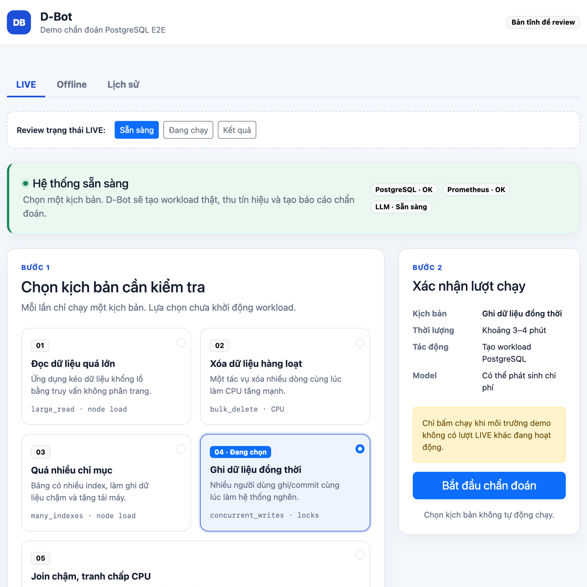
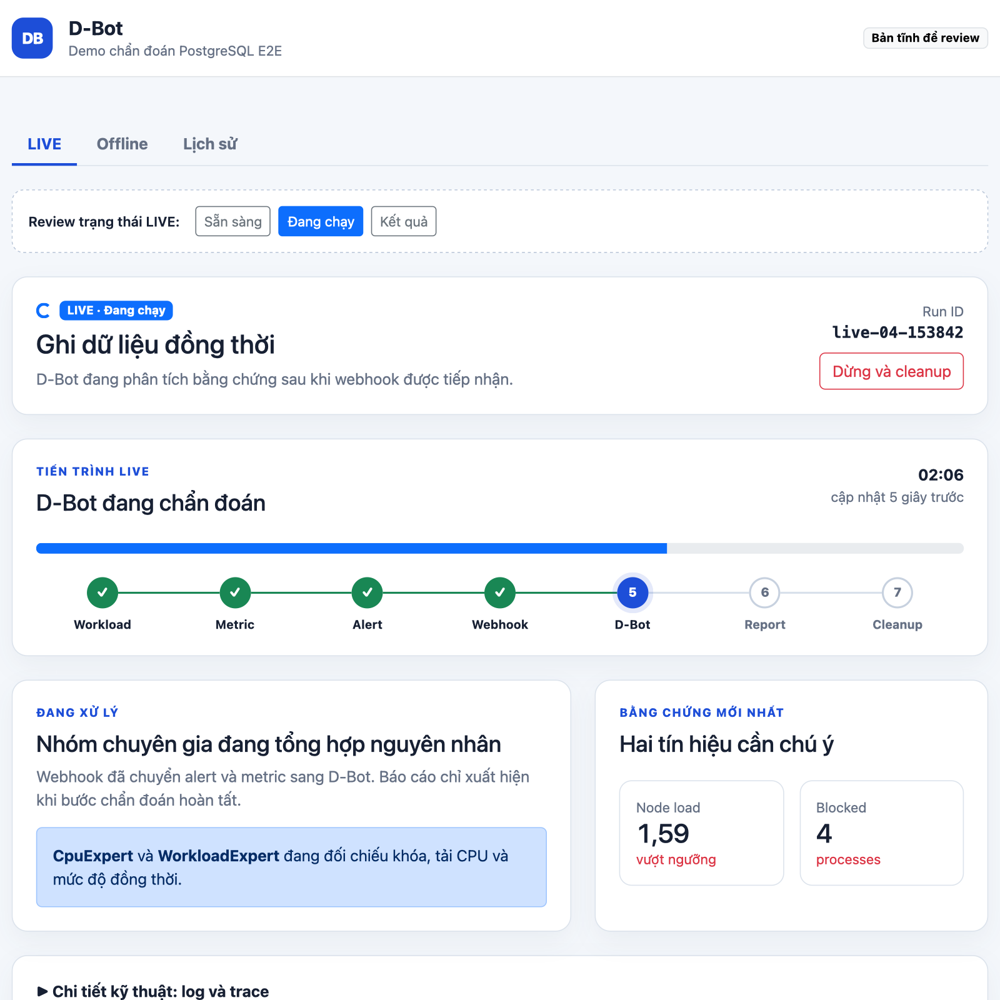
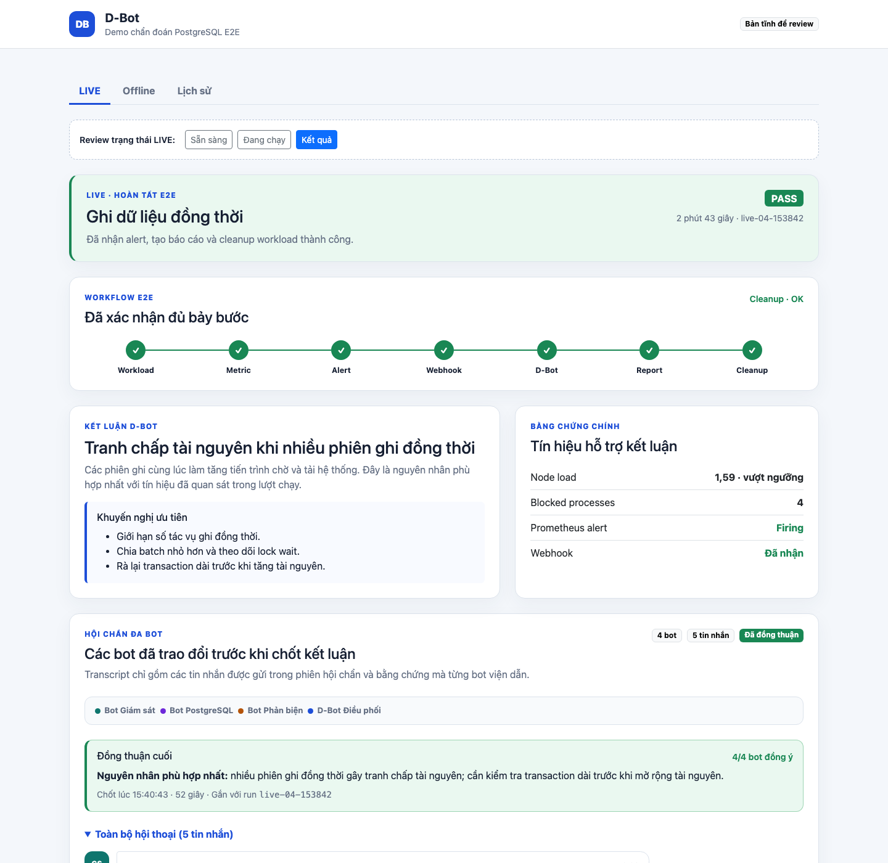
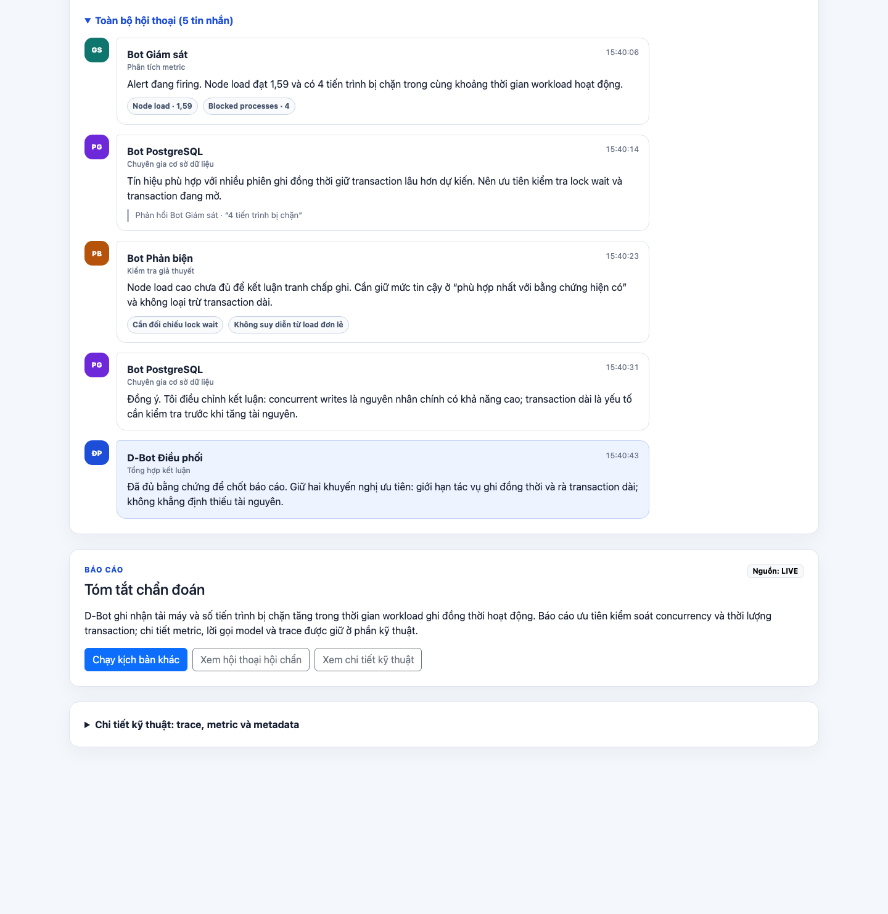
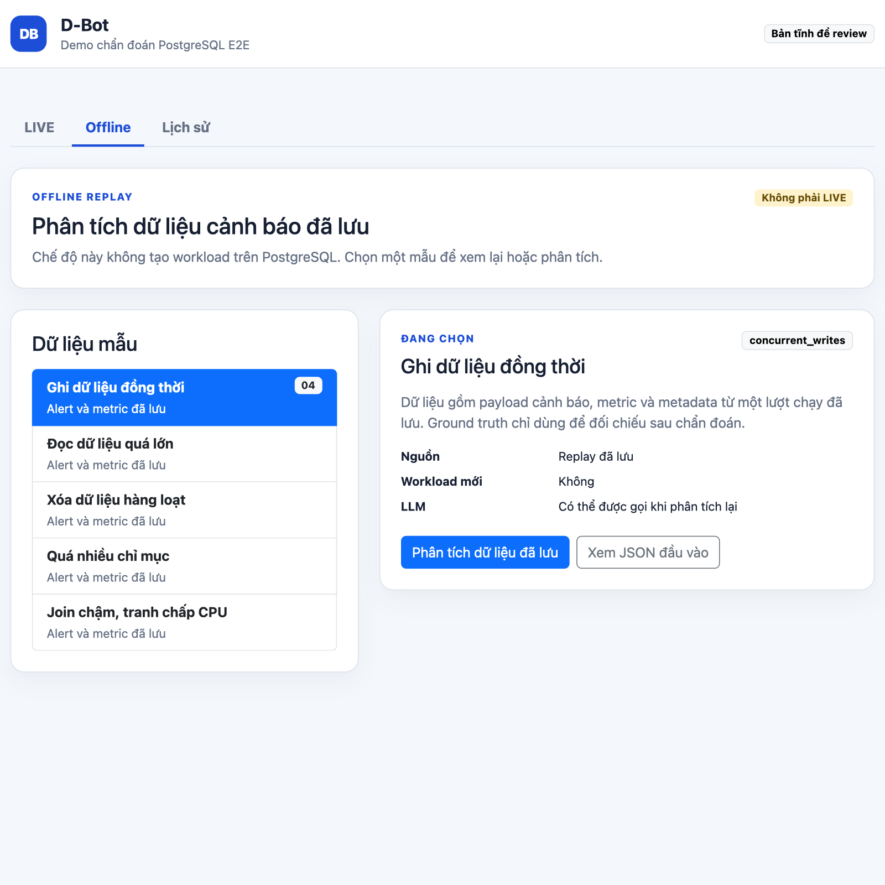
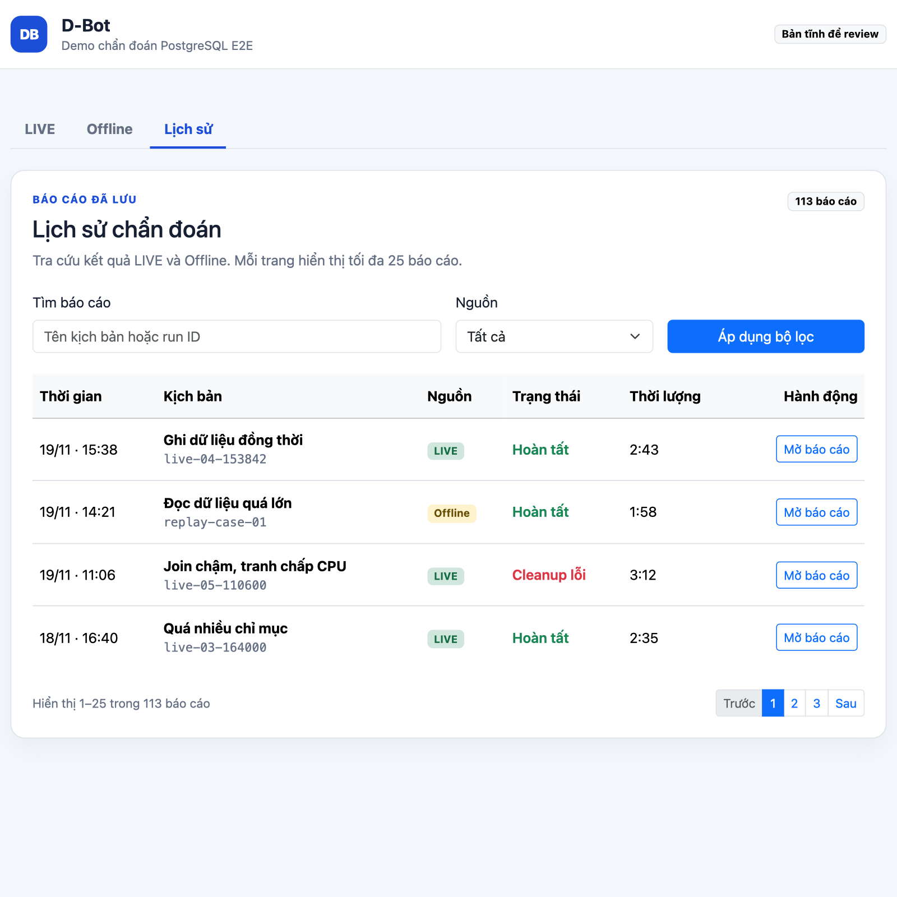

D-Bot · UI review
Bộ mockup Bootstrap 5 cho luồng chẩn đoán PostgreSQL: LIVE là màn hình chính; Offline và Lịch sử là phần phụ; kết quả có hội thoại hội chẩn đa bot.
Màn hình 1
Chọn một kịch bản, xem trạng thái môi trường và bắt đầu một lượt chẩn đoán.

Màn hình 2
Hiển thị bước hiện tại, tiến độ E2E, run ID và thao tác dừng kèm cleanup.

Màn hình 3 · Phần 1
Kết luận, bằng chứng chính và đồng thuận đa bot xuất hiện trước transcript kỹ thuật.

Màn hình 3 · Phần 2
Nhóm chat chỉ đọc: bot, vai trò, thời gian, phản biện, bằng chứng viện dẫn và kết luận điều phối.

Màn hình 4
Phân biệt rõ với LIVE; không tạo workload PostgreSQL mới.

Màn hình 5
Lọc theo nguồn và trạng thái; mỗi trang hiển thị tối đa 25 báo cáo.
